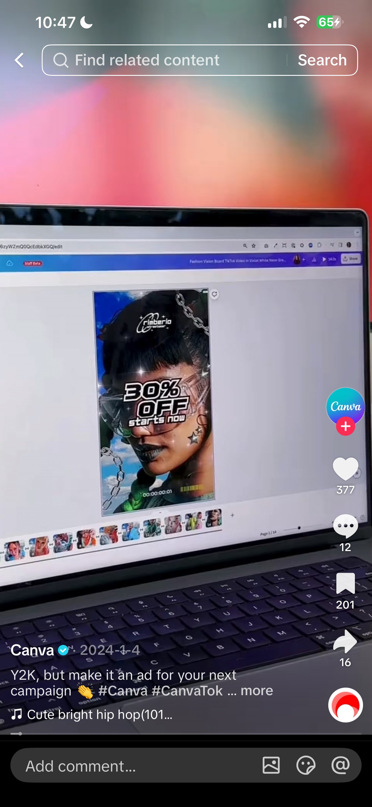
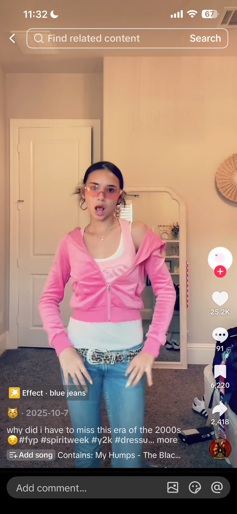
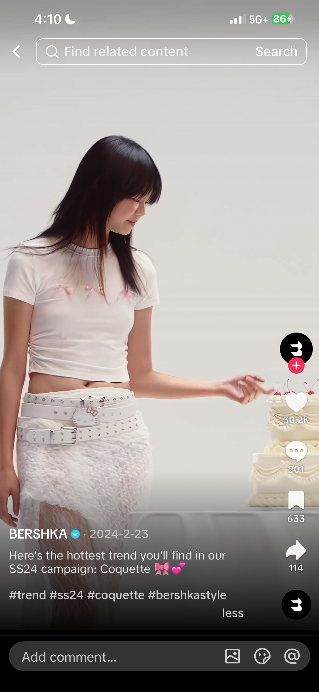
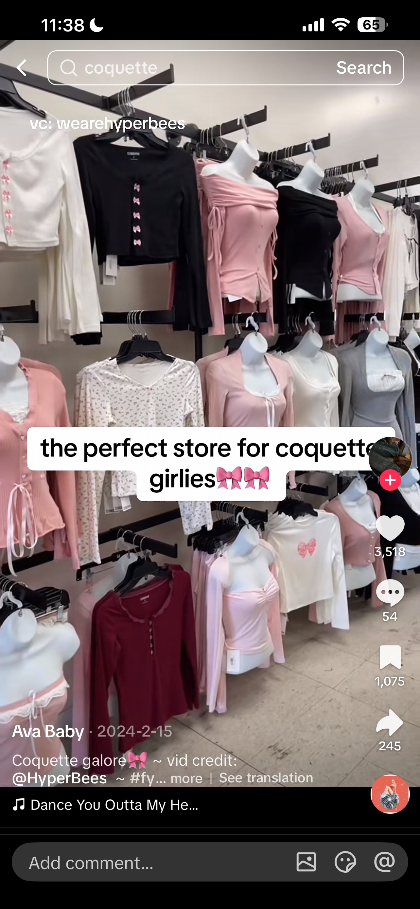

<main>

  <section class="content-page">

    <h1>Trends</h1>

    <!-- Y2K -->
    <section class="trend-section">
      <div class="trend-text">
        <h2>Y2K Aesthetic + Canva</h2>
        <p><strong>What it is:</strong> The Y2K aesthetic brings back early 2000s fashion through bold colors, metallic elements, low-rise styles, and playful graphics.</p>
        <p><strong>Key features:</strong> Bright colors, shiny textures, baby tees, mini bags, chunky accessories.</p>
        <p><strong>Why it appeals to Gen Z:</strong> It feels nostalgic but also new, and TikTok makes it easy to recreate.</p>
        <p><strong>Brand connection:</strong> Canva uses Y2K-inspired visuals to feel creative and relevant.</p>
      </div>

      <div class="trend-images">
        
        
      </div>
    </section>

    <!-- Coquette -->
    <section class="trend-section">
      <div class="trend-text">
        <h2>Coquette Aesthetic + Bershka</h2>
        <p><strong>What it is:</strong> A feminine, soft aesthetic with bows and pastel tones.</p>
        <p><strong>Key features:</strong> Pink palettes, ribbons, vintage clothing.</p>
        <p><strong>Why it appeals:</strong> It allows Gen Z to express a softer identity.</p>
        <p><strong>Brand connection:</strong> Bershka reflects this through styling and campaigns.</p>
      </div>

      <div class="trend-images">
        
        
      </div>
    </section>

    <!-- Clean Girl -->
    <section class="trend-section">
      <div class="trend-text">
        <h2>Clean Girl Aesthetic + Rhode</h2>
        <p><strong>What it is:</strong> A minimal, polished aesthetic focused on natural beauty.</p>
        <p><strong>Key features:</strong> Slick hair, glowing skin, neutral outfits.</p>
        <p><strong>Why it appeals:</strong> It feels effortless but aspirational.</p>
        <p><strong>Brand connection:</